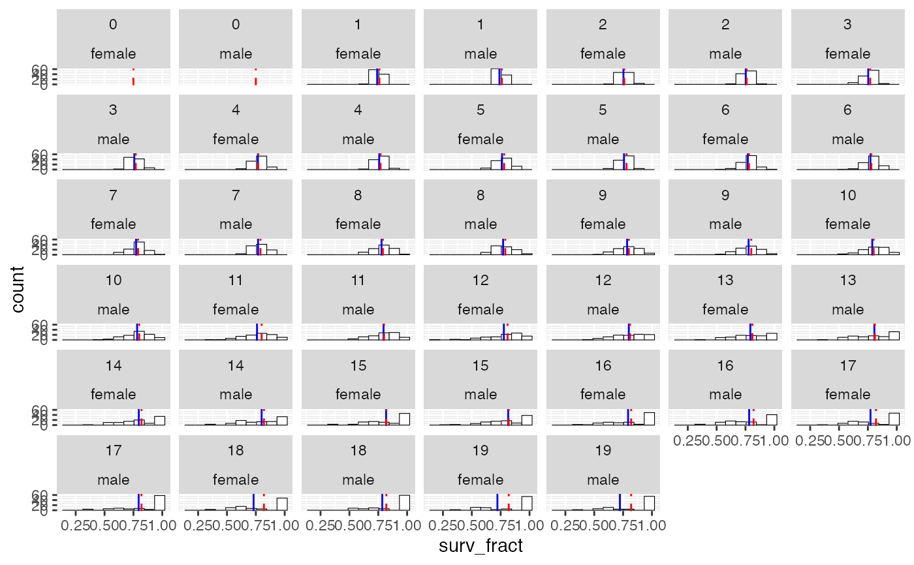

summarize_survival_from_census.RdThe prekill census in year t+1 is the post-kill census in year t, so we can use the prekill census to record the realized fraction of individuals of each age and sex that survived the death episode in each year. In the output survival in year t is the fraction of j-year olds in year t that survive to be j+1 year-olds in year t+1.
summarize_survival_from_census( census, fem_surv_probs = NULL, male_surv_probs = NULL, nbins = 10 )
| census | a tibble of census counts with columns |
|---|---|
| fem_surv_probs | a vector of the parameters used for the simulation. If present these are put on the histogram plots. If you provide one of these, you have to provide both. |
| male_surv_probs | a vector of the parameters used for the simulation. If present these are put on the histogram plots. |
| nbins | number of bins for the histograms |
A list with components:
survival_tibble A tibble with all the survival fractions
plot_histos_by_age_and_sex A histogram of observed survival fractions by age for male and females
across all years of the simulation.
This function does not track migrants. Another one is eventually in order that accounts for migrants out of the population. Also, the plots here might not play well with multiple populations.
result <- summarize_survival_from_census( species_1_slurped_results$census_prekill, species_1_life_history$`fem-surv-probs`, species_1_life_history$`male-surv-probs` ) # print the results if you want result$survival_tibble#> # A tibble: 4,000 x 7 #> year pop age sex n cohort surv_fract #> <int> <int> <int> <chr> <int> <int> <dbl> #> 1 20 0 20 female 1 0 0 #> 2 20 0 19 female 2 1 1 #> 3 21 0 20 female 2 1 0 #> 4 20 0 18 female 2 2 0.5 #> 5 21 0 19 female 1 2 1 #> 6 22 0 20 female 1 2 0 #> 7 20 0 17 female 3 3 0.667 #> 8 21 0 18 female 2 3 1 #> 9 22 0 19 female 2 3 1 #> 10 23 0 20 female 2 3 0 #> # … with 3,990 more rowsresult$plot_histos_by_age_and_sex